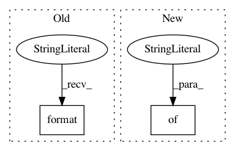

0e49e55d906660e5c9168447c77ebc6d917dda5c,examples/development/variants.py,,get_variant_spec,#Any#Any#Any#Any#,492
Before Change
def get_variant_spec(universe, domain, task, policy):
variant_spec = {
"prefix": "{}/{}/{}".format(universe, domain, task),
"domain": domain,
"task": task,
"universe": universe,
After Change
},
"sampler_params": {
"type": "SimpleSampler",
"kwargs": {
"max_path_length": MAX_PATH_LENGTH_PER_DOMAIN.get(
domain, DEFAULT_MAX_PATH_LENGTH),
"min_pool_size": MAX_PATH_LENGTH_PER_DOMAIN.get(
domain, DEFAULT_MAX_PATH_LENGTH),
"batch_size": 256,
}
},
"run_params": {
"seed": tune.grid_search([1, 2]),
"snapshot_mode": "gap",
In pattern: SUPERPATTERN
Frequency: 3
Non-data size: 2
Instances
Project Name: rail-berkeley/softlearning
Commit Name: 0e49e55d906660e5c9168447c77ebc6d917dda5c
Time: 2018-10-22
Author: hartikainen@berkeley.edu
File Name: examples/development/variants.py
Class Name:
Method Name: get_variant_spec
Project Name: rail-berkeley/softlearning
Commit Name: b2be6dc53ca9328e7b4b29ddd5cc8c0d45b2f414
Time: 2018-06-21
Author: kristian.hartikainen@gmail.com
File Name: examples/multigoal_ray.py
Class Name:
Method Name: main
Project Name: rail-berkeley/softlearning
Commit Name: 9caa24c58689c1d6f3d982f623ceab8f78e7362d
Time: 2018-10-20
Author: hartikainen@berkeley.edu
File Name: examples/multigoal_sac.py
Class Name:
Method Name: main